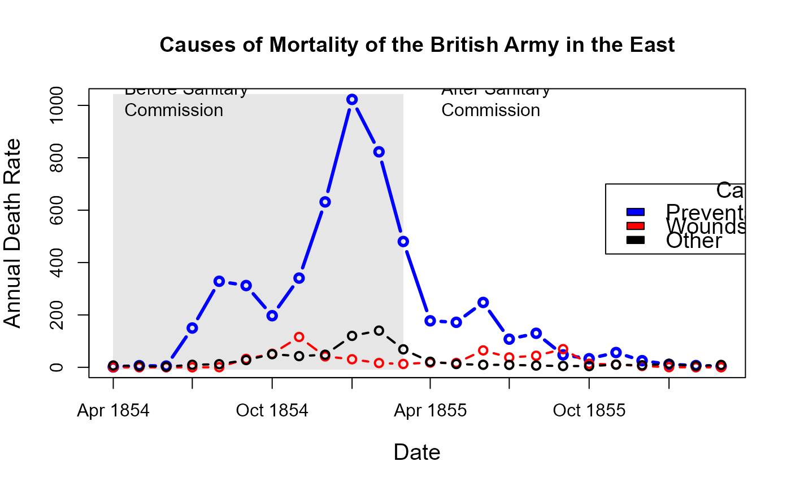
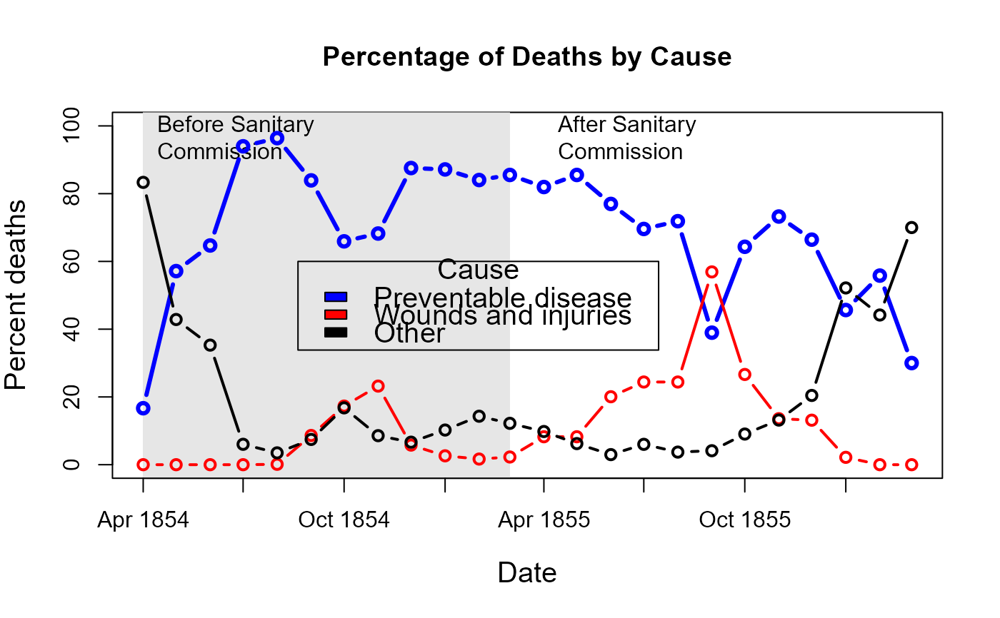

In the history of data visualization, Florence Nightingale is best remembered for her role as a social activist and her view that statistical data, presented in charts and diagrams, could be used as powerful arguments for medical reform.
After witnessing deplorable sanitary conditions in the Crimea, she wrote several influential texts (Nightingale, 1858, 1859), including polar-area graphs (sometimes called "Coxcombs" or rose diagrams), showing the number of deaths in the Crimean from battle compared to disease or preventable causes that could be reduced by better battlefield nursing care.
Her Diagram of the Causes of Mortality in the Army in the East showed that most of the British soldiers who died during the Crimean War died of sickness rather than of wounds or other causes. It also showed that the death rate was higher in the first year of the war, before a Sanitary Commissioners arrived in March 1855 to improve hygiene in the camps and hospitals.
Format
A data frame with 24 observations on the following 10 variables.
Datea Date, composed as
as.Date(paste(Year, Month, 1, sep='-'), "\%Y-\%b-\%d")MonthMonth of the Crimean War, an ordered factor
YearYear of the Crimean War
ArmyEstimated average monthly strength of the British army
DiseaseNumber of deaths from preventable or mitagable zymotic diseases
WoundsNumber of deaths directly from battle wounds
OtherNumber of deaths from other causes
Disease.rateAnnual rate of deaths from preventable or mitagable zymotic diseases, per 1000
Wounds.rateAnnual rate of deaths directly from battle wounds, per 1000
Other.rateAnnual rate of deaths from other causes, per 1000
Source
The data were obtained from:
Pearson, M. and Short, I. (2007). Understanding Uncertainty: Mathematics of the Coxcomb. http://understandinguncertainty.org/node/214.
Details
For a given cause of death, D, annual rates per 1000 are calculated
as 12 * 1000 * D / Army, rounded to 1 decimal.
The two panels of Nightingale's Coxcomb correspond to dates before and after March 1855
References
Nightingale, F. (1858) Notes on Matters Affecting the Health, Efficiency, and Hospital Administration of the British Army Harrison and Sons, 1858
Nightingale, F. (1859) A Contribution to the Sanitary History of the British Army during the Late War with Russia London: John W. Parker and Son.
Small, H. (1998) Florence Nightingale's statistical diagrams http://www.florence-nightingale-avenging-angel.co.uk/GraphicsPaper/Graphics.htm
Pearson, M. and Short, I. (2008) Nightingale's Rose (flash animation). http://understandinguncertainty.org/files/animations/Nightingale11/Nightingale1.html
Examples
data(Nightingale)
# For some graphs, it is more convenient to reshape death rates to long format
# keep only Date and death rates
require(reshape)
Night<- Nightingale[,c(1,8:10)]
melted <- melt(Night, "Date")
names(melted) <- c("Date", "Cause", "Deaths")
melted$Cause <- sub("\\.rate", "", melted$Cause)
melted$Regime <- ordered( rep(c(rep('Before', 12), rep('After', 12)), 3),
levels=c('Before', 'After'))
Night <- melted
# subsets, to facilitate separate plotting
Night1 <- subset(Night, Date < as.Date("1855-04-01"))
Night2 <- subset(Night, Date >= as.Date("1855-04-01"))
# sort according to Deaths in decreasing order, so counts are not obscured [thx: Monique Graf]
Night1 <- Night1[order(Night1$Deaths, decreasing=TRUE),]
Night2 <- Night2[order(Night2$Deaths, decreasing=TRUE),]
# merge the two sorted files
Night <- rbind(Night1, Night2)
require(ggplot2)
# Before plot
cxc1 <- ggplot(Night1, aes(x = factor(Date), y=Deaths, fill = Cause)) +
# do it as a stacked bar chart first
geom_bar(width = 1, position="identity", stat="identity", color="black") +
# set scale so area ~ Deaths
scale_y_sqrt()
# A coxcomb plot = bar chart + polar coordinates
cxc1 + coord_polar(start=3*pi/2) +
ggtitle("Causes of Mortality in the Army in the East") +
xlab("")
# After plot
cxc2 <- ggplot(Night2, aes(x = factor(Date), y=Deaths, fill = Cause)) +
geom_bar(width = 1, position="identity", stat="identity", color="black") +
scale_y_sqrt()
cxc2 + coord_polar(start=3*pi/2) +
ggtitle("Causes of Mortality in the Army in the East") +
xlab("")
if (FALSE) { # \dontrun{
# do both together, with faceting
cxc <- ggplot(Night, aes(x = factor(Date), y=Deaths, fill = Cause)) +
geom_bar(width = 1, position="identity", stat="identity", color="black") +
scale_y_sqrt() +
facet_grid(. ~ Regime, scales="free", labeller=label_both)
cxc + coord_polar(start=3*pi/2) +
ggtitle("Causes of Mortality in the Army in the East") +
xlab("")
} # }
## What if she had made a set of line graphs?
# these plots are best viewed with width ~ 2 * height
colors <- c("blue", "red", "black")
with(Nightingale, {
plot(Date, Disease.rate, type="n", cex.lab=1.25,
ylab="Annual Death Rate", xlab="Date", xaxt="n",
main="Causes of Mortality of the British Army in the East");
# background, to separate before, after
rect(as.Date("1854/4/1"), -10, as.Date("1855/3/1"),
1.02*max(Disease.rate), col=gray(.90), border="transparent");
text( as.Date("1854/4/1"), .98*max(Disease.rate), "Before Sanitary\nCommission", pos=4);
text( as.Date("1855/4/1"), .98*max(Disease.rate), "After Sanitary\nCommission", pos=4);
# plot the data
points(Date, Disease.rate, type="b", col=colors[1], lwd=3);
points(Date, Wounds.rate, type="b", col=colors[2], lwd=2);
points(Date, Other.rate, type="b", col=colors[3], lwd=2)
}
)
# add custom Date axis and legend
axis.Date(1, at=seq(as.Date("1854/4/1"), as.Date("1856/3/1"), "3 months"), format="%b %Y")
legend(as.Date("1855/10/20"), 700, c("Preventable disease", "Wounds and injuries", "Other"),
col=colors, fill=colors, title="Cause", cex=1.25)

# Alternatively, show each cause of death as percent of total
Nightingale <- within(Nightingale, {
Total <- Disease + Wounds + Other
Disease.pct <- 100*Disease/Total
Wounds.pct <- 100*Wounds/Total
Other.pct <- 100*Other/Total
})
colors <- c("blue", "red", "black")
with(Nightingale, {
plot(Date, Disease.pct, type="n", ylim=c(0,100), cex.lab=1.25,
ylab="Percent deaths", xlab="Date", xaxt="n",
main="Percentage of Deaths by Cause");
# background, to separate before, after
rect(as.Date("1854/4/1"), -10, as.Date("1855/3/1"),
1.02*max(Disease.rate), col=gray(.90), border="transparent");
text( as.Date("1854/4/1"), .98*max(Disease.pct), "Before Sanitary\nCommission", pos=4);
text( as.Date("1855/4/1"), .98*max(Disease.pct), "After Sanitary\nCommission", pos=4);
# plot the data
points(Date, Disease.pct, type="b", col=colors[1], lwd=3);
points(Date, Wounds.pct, type="b", col=colors[2], lwd=2);
points(Date, Other.pct, type="b", col=colors[3], lwd=2)
}
)
# add custom Date axis and legend
axis.Date(1, at=seq(as.Date("1854/4/1"), as.Date("1856/3/1"), "3 months"), format="%b %Y")
legend(as.Date("1854/8/20"), 60, c("Preventable disease", "Wounds and injuries", "Other"),
col=colors, fill=colors, title="Cause", cex=1.25)
